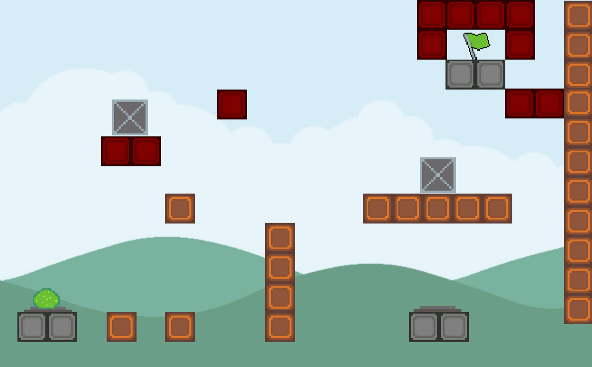
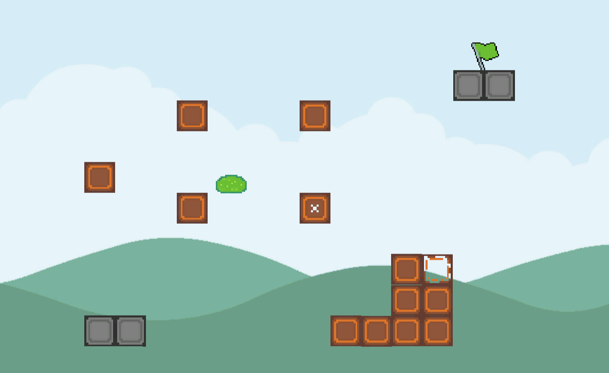
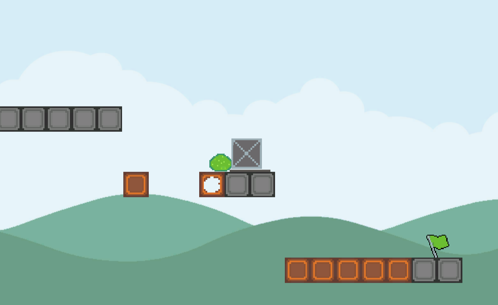

Description
Toxic Blob is a single-player platformer developed for the Northeastern University Game Development Club's summer Husky Jam 2021. The theme
for the jam was "toxic," and the game is about a toxic slime that dissolves the platforms it walks on, requiring quick thinking and platforming skills
to complete all 10 levels.
Details
Engine: Unity (2D)
Programming Language: C#
Role: Programmer
Contributions
Developed player movement
Created disappearing platform functionality
Implemented puzzle elements, like pressure plates
The Process
I took more of an administrative role for this game jam, as I was one of the jam organizers, so
I decided to help out where I was needed. One person, and my partner for this jam, had never done
a game jam before and was having trouble finding a group, so I joined him on fleshing out his idea
for what kind of game he wanted to make and assisting him in developing the gameplay while he
developed the UI and art. The game was completed within 48 hours.


